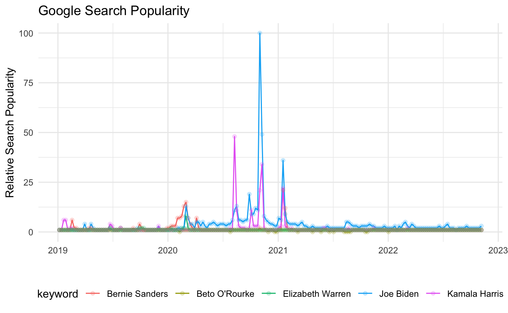

Introducing trendyy
A tidy wrapper for gtrendsR
trendyy is a package for querying Google Trends. It is build around Philippe Massicotte’s package gtrendsR which accesses this data wonderfully.
The inspiration for this package was to provide a tidy interface to the trends data.
Getting Started
Installation
You can install trendyy from CRAN using install.packages("trendyy").
Usage
Use trendy() to search Google Trends. The only mandatory argument is search_terms. This is a character vector with the terms of interest. It is important to note that Google Trends is only capable of comparing up to five terms. Thus, if your search_terms vector is longer than 5, it will search each term individually. This will remove the direct comparative advantage that Google Trends gives you.
Additional arguments

from: The beginning date of the query in"YYYY-MM-DD"format.to: The end date of the query in"YYYY-MM-DD"format....: any additional arguments that would be passed togtrendsR::gtrends(). Note that it might be useful to indicate the geography of interest. SeegtrendsR::countriesfor list of possible geographies.
Accessor Functions
get_interest(): Retrieve interest over timeget_interest_city(): Retrieve interest by cityget_interest_country(): Retrieve interest by countryget_interest_dma(): Retrieve interest by DMAget_interest_region(): Retrieve interest by regionget_related_queries(): Retrieve related queriesget_related_topics(): Retrieve related topics
Example
Seeing as I found an interest in this due to the relatively pervasive use of Google Trends in political analysis, I will compare the top five polling candidates in the 2020 Democratic Primary. As of May 22nd, they were Joe Biden, Kamala Harris, Beto O’Rourke, Bernie Sanders, and Elizabeth Warren.
First, I will create a vector of my desired search terms. Second, I will pass that vector to trendy() specifying my query date range from the first of 2019 until today (May 25th, 2019).
candidates <- c("Joe Biden", "Kamala Harris", "Beto O'Rourke", "Bernie Sanders", "Elizabeth Warren")
candidate_trends <- trendy(candidates, from = "2019-01-01", to = Sys.Date())Now that we have a trendy object, we can print it out to get a summary of the trends.
candidate_trends
#> ~Trendy results~
#>
#> Search Terms: Joe Biden, Kamala Harris, Beto O'Rourke, Bernie Sanders, Elizabeth Warren
#>
#> (>^.^)> ~~~~~~~~~~~~~~~~~~~~ summary ~~~~~~~~~~~~~~~~~~~~ <(^.^<)
#> # A tibble: 5 × 5
#> keyword max_hits min_hits from to
#> <chr> <int> <int> <date> <date>
#> 1 Bernie Sanders 21 1 2019-01-06 2022-11-06
#> 2 Beto O'Rourke 1 0 2019-01-06 2022-11-06
#> 3 Elizabeth Warren 8 1 2019-01-06 2022-11-06
#> 4 Joe Biden 100 1 2019-01-06 2022-11-06
#> 5 Kamala Harris 48 1 2019-01-06 2022-11-06In order to retrieve the trend data, use get_interest(). Note, that this is dplyr friendly.
get_interest(candidate_trends)
#> # A tibble: 1,005 × 7
#> date hits keyword geo time gprop category
#> <dttm> <int> <chr> <chr> <chr> <chr> <chr>
#> 1 2019-01-06 00:00:00 1 Joe Biden world 2019-01-01 2022-11-14 web All categories
#> 2 2019-01-13 00:00:00 1 Joe Biden world 2019-01-01 2022-11-14 web All categories
#> 3 2019-01-20 00:00:00 1 Joe Biden world 2019-01-01 2022-11-14 web All categories
#> 4 2019-01-27 00:00:00 1 Joe Biden world 2019-01-01 2022-11-14 web All categories
#> 5 2019-02-03 00:00:00 1 Joe Biden world 2019-01-01 2022-11-14 web All categories
#> 6 2019-02-10 00:00:00 1 Joe Biden world 2019-01-01 2022-11-14 web All categories
#> 7 2019-02-17 00:00:00 1 Joe Biden world 2019-01-01 2022-11-14 web All categories
#> 8 2019-02-24 00:00:00 1 Joe Biden world 2019-01-01 2022-11-14 web All categories
#> 9 2019-03-03 00:00:00 1 Joe Biden world 2019-01-01 2022-11-14 web All categories
#> 10 2019-03-10 00:00:00 1 Joe Biden world 2019-01-01 2022-11-14 web All categories
#> # … with 995 more rows
#> # ℹ Use `print(n = ...)` to see more rowsPlotting Interest
candidate_trends %>%
get_interest() %>%
ggplot(aes(date, hits, color = keyword)) +
geom_line() +
geom_point(alpha = .2) +
theme_minimal() +
theme(legend.position = "bottom") +
labs(x = "",
y = "Relative Search Popularity",
title = "Google Search Popularity")

It is also possible to view the related search queries for a given set of keywords using get_related_queries().
candidate_trends %>%
get_related_queries() %>%
group_by(keyword) %>%
sample_n(2)
#> # A tibble: 10 × 5
#> # Groups: keyword [5]
#> subject related_queries value keyword category
#> <chr> <chr> <chr> <chr> <chr>
#> 1 +3,450% rising klobuchar Bernie Sanders All categories
#> 2 81 top joe biden Bernie Sanders All categories
#> 3 32 top kamala harris Beto ORourke All categories
#> 4 Breakout rising beto orourke announcement Beto ORourke All categories
#> 5 Breakout rising elizabeth warren beer video Elizabeth Warren All categories
#> 6 40 top elizabeth warren net worth Elizabeth Warren All categories
#> 7 Breakout rising joe biden stimulus Joe Biden All categories
#> 8 Breakout rising joe biden senile Joe Biden All categories
#> 9 Breakout rising kamala harris husbands Kamala Harris All categories
#> 10 30 top vice president kamala harris Kamala Harris All categories